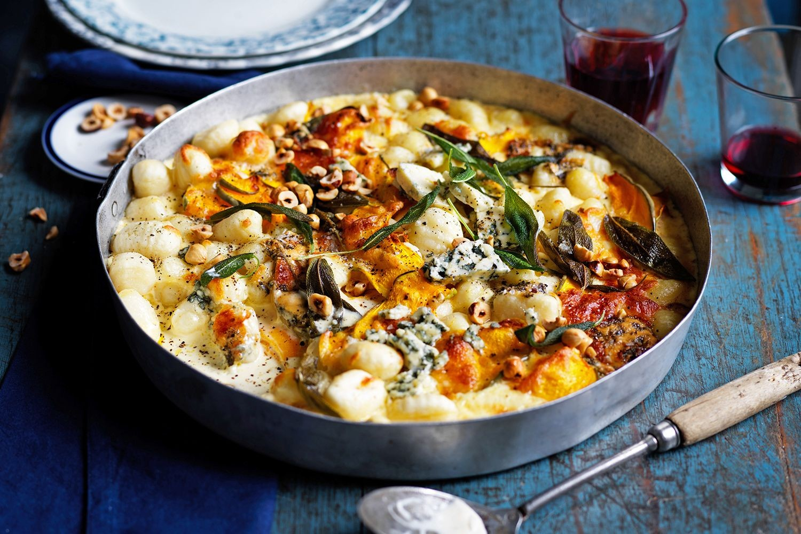

Pumpkin and sage baked gnocchi

Pumpkin and sage baked gnocchi
Just when you thought pasta bakes couldn't get any better, this easy recipe for pumpkin and sage gnocchi comes along.
Ingredients
- 750g store-bought potato gnocchi
- 1/3 cup (80ml) olive oil
- 16 sage leaves
- 750g Queensland blue or Jap pumpkin, cut into 5mm-thick slices
- 2 egg yolks
- 600ml pure (thin) cream
- 1/2 tsp finely grated nutmeg
- 3/4 cup (75g) coarsely grated mozzarella
- 100g blue cheese, crumbled
- Roasted chopped hazelnuts, to serve
Method
- Preheat oven to 200°C. Grease a 32cm round 3.75L (15-cup) baking dish.
- Cook gnocchi according to packet instructions, then drain and rinse under cold water.
- Toss pumpkin and remaining 1 tbs oil in a bowl. Combine with gnocchi, egg yolks, cream, nutmeg, 1/2 cup (50g) mozzarella, half the sage and half the blue cheese. Spoon into prepared dish and top with remaining 1/4 cup (25g) mozzarella.
- Bake for 45-50 minutes or until pumpkin is tender.
- Meanwhile, heat 1/4 cup (60ml) oil in a frypan over medium-high heat. Add the remaining sage and cook for 1 minute or until crisp and bright. Remove using a slotted spoon and drain on paper towel, reserving oil.
- Top with nuts, fried sage and remaining 50g blue cheese.
- Drizzle with reserved sage oil to serve.